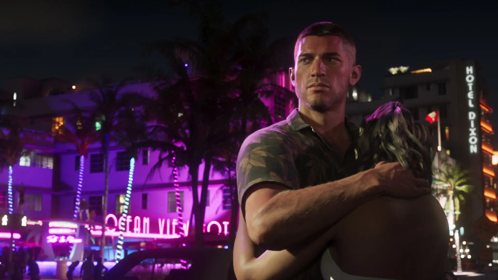
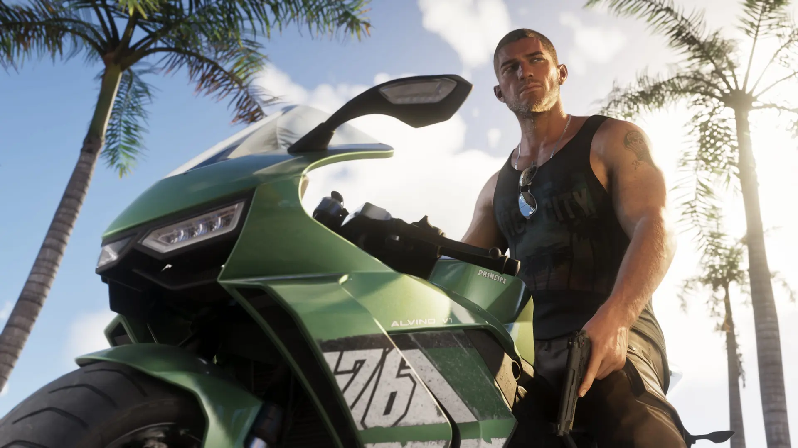
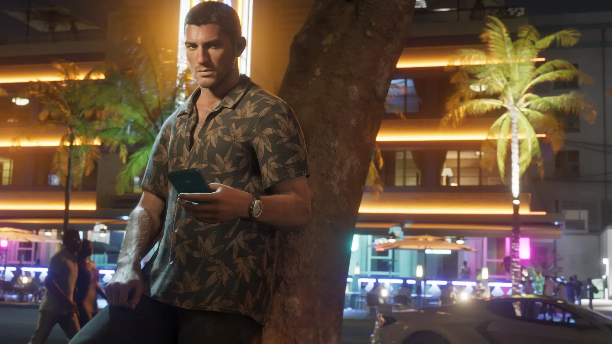
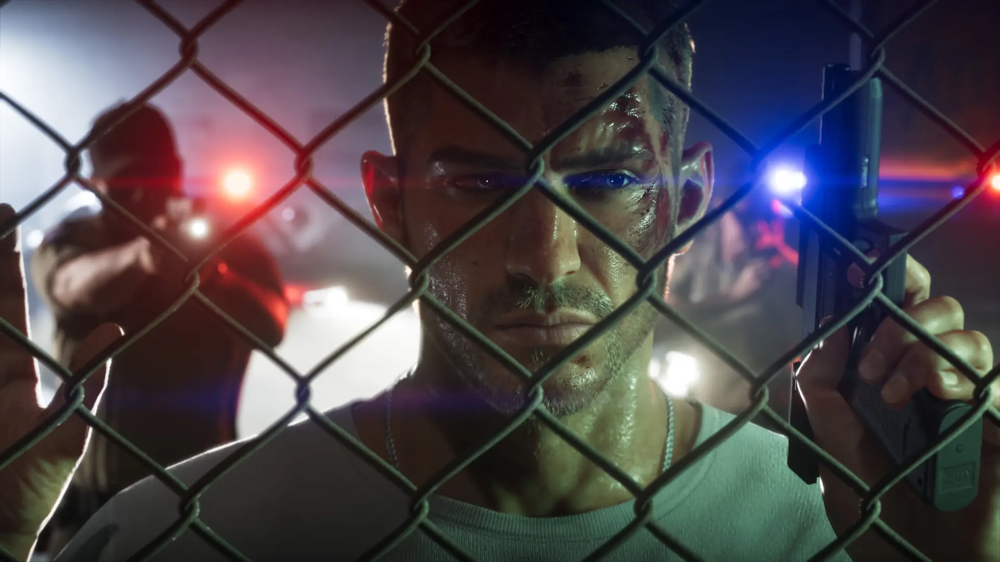

01
JasonDuval
Criado entre trambiqueiros, Jason tentou se endireitar no Exército, mas terminou nas Leonida Keys prestando serviço para contrabandistas locais. Ele só quer uma vida tranquila — e ela parece cada vez mais distante.